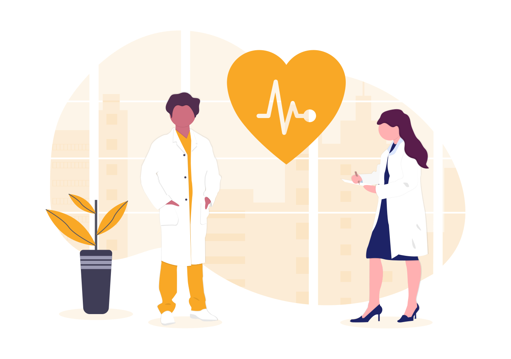

Mengatur Jadwal Olahraga Yang Flesibel.
Membagi waktu latihan Anda agar lebih sesuai jadwal harian. Jika Anda hanya dapat berolahraga 10 menit per hari selama seminggu, tidak masalah. Anda dapat melakukan latihan lebih lama pada saat akhir pekan untuk menebus waktu yang hilang.
Mengatur Pola Makan Sehat Dan Seimbang
Cara mengatur pola makan terbaik adalah mengetahui kapan dan seberapa besar porsi ketika makan. Sarapan merupakan waktu makan yang paling penting karena dapat mempercepat proses metabolisme, dan jangan sampai kita dehidrasi saat berolahraga.
Melakukan Pola Olahraga Sederhana
Lakukan olahraga ringan seperti peregangan, latihan bodyweight seperti push up, squat, lunge, dan olahraga ringan lainnya sebanyak 15 repetisi dan 3 set. Jika masih terasa berat, kamu bisa mengatur jadwalnya. Misalnya, melakukan dua jenis olahraga tersebut secara berselang-seling.
Selalu Cek Kesehatan
Medical check up perlu dilakukan secara rutin karena membantu para medis termasuk dokter dalam mendiagnosis beragam penyakit sebelum berkembang menjadi lebih parah.